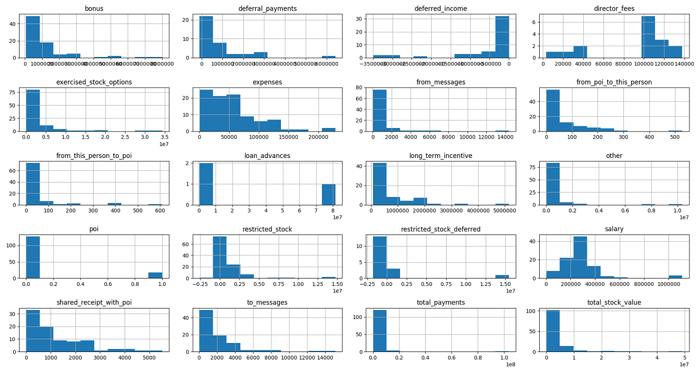
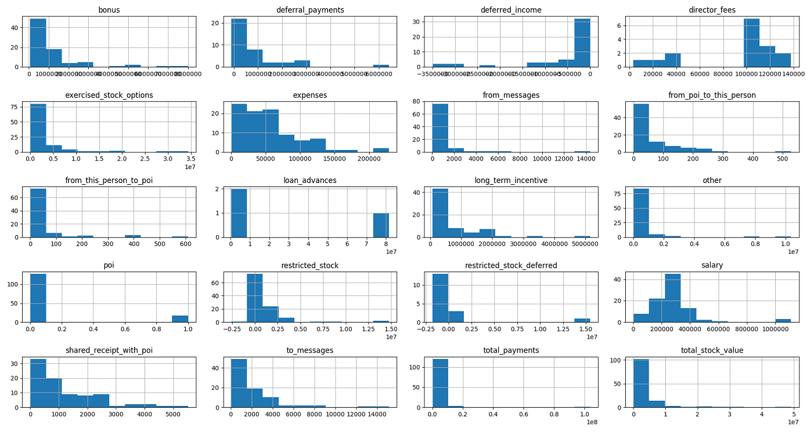
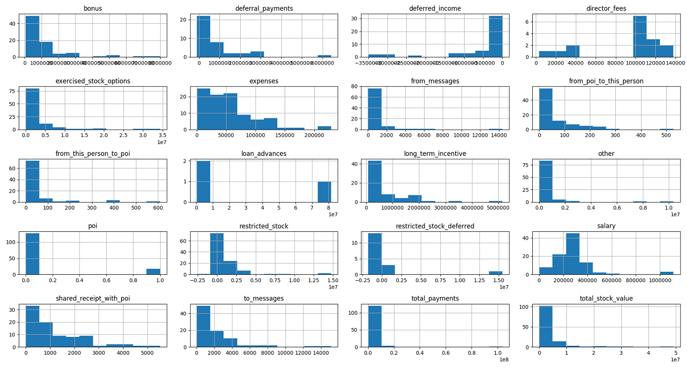

Objecive of this project to find Person of Interest (POI) using Enron dataset. POI is someone who is involved in the fraud.
Enron dataset contains 145 records, each record has 20 features. Label poi is
boolean value that is True for Person of Interest. There are 18 POI in the dataset.
This is binary classification problem when we need to predict True or False for a
given input. Following is one exmaple of a record in dataset.
{ 'LEFF DANIEL P':
{ 'salary': 273746,
'to_messages': 2822,
'deferral_payments': 'NaN',
'total_payments': 2664228,
'exercised_stock_options': 'NaN',
'bonus': 1000000,
'restricted_stock': 360528,
'shared_receipt_with_poi': 2672,
'restricted_stock_deferred': 'NaN',
'total_stock_value': 360528,
'expenses': 'NaN',
'loan_advances': 'NaN',
'from_messages': 63,
'other': 3083,
'from_this_person_to_poi': 14,
'poi': False,
'director_fees': 'NaN',
'deferred_income': 'NaN',
'long_term_incentive': 1387399,
'email_address': 'dan.leff@enron.com',
'from_poi_to_this_person': 67
}
}
I tried to visualize dataset, however it didnt provide me sufficient information, so it wasnt very useful. Following are the plots I did:

find_outliers method is used to find outliers, it print top 10 employees by salary,
bonus, totalpayments and totalstock_value.TOTAL has very high number for all 4 features. Also by key name TOTAL
is appears this sum of all records, this is definitely outlier and we remove this.fraction_to_poi and fraction_from_poi. fraction_to_poi is
fraction of email sent by an employee to POI. fraction_from_poi is number of emails an
employee received from POI.We comapred following classification algorithms.
For each classfier we create a pipeline, with PCA and classifier steps, PCA
reduces the number of features to 5. Following is result of running test_classifier
on each classifier.
### RandomForestClassifier
Pipeline(steps=[('pca', PCA(copy=True, iterated_power='auto', n_components=5, random_state=None,
svd_solver='auto', tol=0.0, whiten=False)), ('RandomForestClassifier', RandomForestClassifier(bootstrap=True, class_weight=None, criterion='gini',
max_depth=None, max_features='auto', max_leaf_nodes...stimators=10, n_jobs=1, oob_score=False, random_state=42,
verbose=0, warm_start=False))])
Accuracy: 0.85713 Precision: 0.40654 Recall: 0.15550 F1: 0.22495 F2: 0.17741
Total predictions: 15000 True positives: 311 False positives: 454 False negatives: 1689 True negatives: 12546
### GradientBoostingClassifier
Pipeline(steps=[('pca', PCA(copy=True, iterated_power='auto', n_components=5, random_state=None,
svd_solver='auto', tol=0.0, whiten=False)), ('GradientBoostingClassifier', GradientBoostingClassifier(criterion='friedman_mse', init=None,
learning_rate=0.1, loss='deviance', max_depth=3,
...rs=100, presort='auto', random_state=42,
subsample=1.0, verbose=0, warm_start=False))])
Accuracy: 0.84320 Precision: 0.36944 Recall: 0.24900 F1: 0.29749 F2: 0.26637
Total predictions: 15000 True positives: 498 False positives: 850 False negatives: 1502 True negatives: 12150
### LogisticRegression
Pipeline(steps=[('pca', PCA(copy=True, iterated_power='auto', n_components=5, random_state=None,
svd_solver='auto', tol=0.0, whiten=False)), ('LogisticRegression', LogisticRegression(C=1.0, class_weight=None, dual=False, fit_intercept=True,
intercept_scaling=1, max_iter=100, multi_class='ovr', n_jobs=1,
penalty='l2', random_state=42, solver='liblinear', tol=0.0001,
verbose=0, warm_start=False))])
Accuracy: 0.83680 Precision: 0.31240 Recall: 0.18650 F1: 0.23356 F2: 0.20285
Total predictions: 15000 True positives: 373 False positives: 821 False negatives: 1627 True negatives: 12179
### GaussianNB
Pipeline(steps=[('pca', PCA(copy=True, iterated_power='auto', n_components=5, random_state=None,
svd_solver='auto', tol=0.0, whiten=False)), ('GaussianNB', GaussianNB(priors=None))])
Accuracy: 0.86393 Precision: 0.47931 Recall: 0.23750 F1: 0.31762 F2: 0.26415
Total predictions: 15000 True positives: 475 False positives: 516 False negatives: 1525 True negatives: 12484
### SVM
Got a divide by zero when trying out: Pipeline(steps=[('pca', PCA(copy=True, iterated_power='auto', n_components=5, random_state=None,
svd_solver='auto', tol=0.0, whiten=False)), ('SVM', SVC(C=1.0, cache_size=200, class_weight=None, coef0=0.0,
decision_function_shape=None, degree=3, gamma='auto', kernel='rbf',
max_iter=-1, probability=False, random_state=42, shrinking=True,
tol=0.001, verbose=False))])
Precision or recall may be undefined due to a lack of true positive predicitons.
### KNeighborsClassifier
Pipeline(steps=[('pca', PCA(copy=True, iterated_power='auto', n_components=5, random_state=None,
svd_solver='auto', tol=0.0, whiten=False)), ('KNeighborsClassifier', KNeighborsClassifier(algorithm='auto', leaf_size=30, metric='minkowski',
metric_params=None, n_jobs=1, n_neighbors=5, p=2,
weights='uniform'))])
Accuracy: 0.88767 Precision: 0.74119 Recall: 0.24200 F1: 0.36487 F2: 0.27967
Total predictions: 15000 True positives: 484 False positives: 169 False negatives: 1516 True negatives: 12831
### DecisionTreeClassifier
Pipeline(steps=[('pca', PCA(copy=True, iterated_power='auto', n_components=5, random_state=None,
svd_solver='auto', tol=0.0, whiten=False)), ('DecisionTreeClassifier', DecisionTreeClassifier(class_weight=None, criterion='gini', max_depth=None,
max_features=None, max_leaf_nodes=None,
min_impurity_split=1e-07, min_samples_leaf=1,
min_samples_split=2, min_weight_fraction_leaf=0.0,
presort=False, random_state=42, splitter='best'))])
Accuracy: 0.81340 Precision: 0.29628 Recall: 0.29050 F1: 0.29336 F2: 0.29164
Total predictions: 15000 True positives: 581 False positives: 1380 False negatives: 1419 True negatives: 11620
### AdaBoostClassifier
Pipeline(steps=[('pca', PCA(copy=True, iterated_power='auto', n_components=5, random_state=None,
svd_solver='auto', tol=0.0, whiten=False)), ('AdaBoostClassifier', AdaBoostClassifier(algorithm='SAMME.R', base_estimator=None,
learning_rate=1.0, n_estimators=50, random_state=42))])
Accuracy: 0.81527 Precision: 0.24919 Recall: 0.19150 F1: 0.21657 F2: 0.20080
Total predictions: 15000 True positives: 383 False positives: 1154 False negatives: 1617 True negatives: 11846
.3 Precision and Recall0.74119 and Recall close to .3, 0.24200.